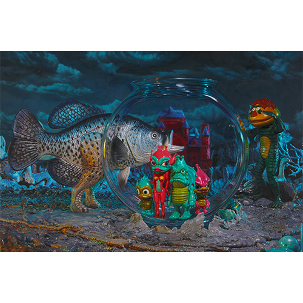
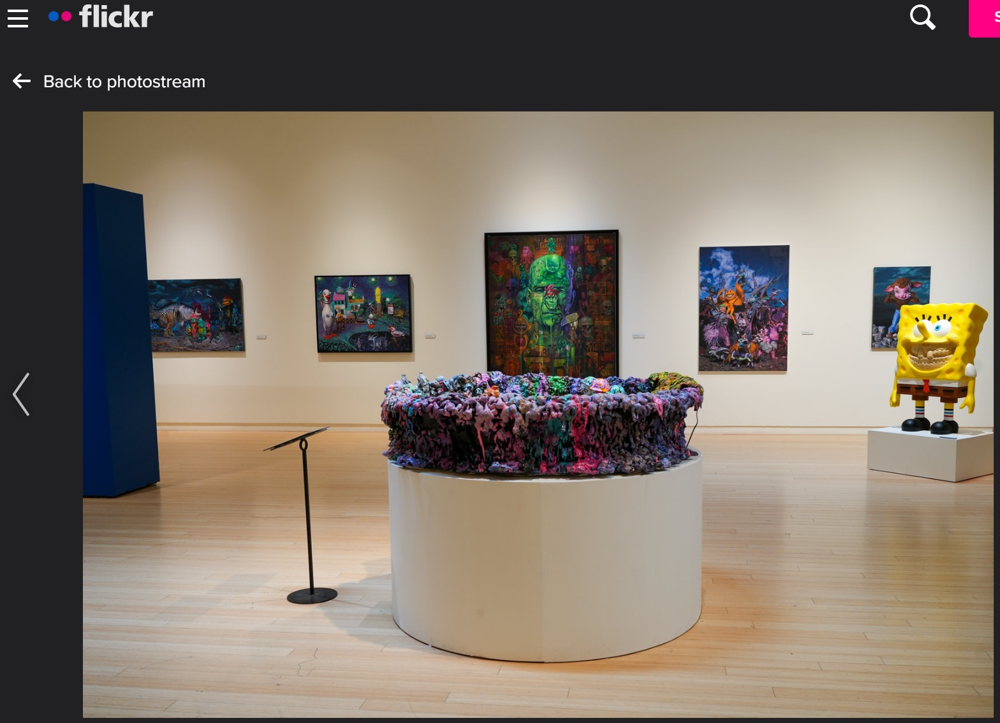

Exhibitions
Brand Royalty, Allouche Gallery, New York, New York, US, September 18–October 19, 2021.
Living in Delusionville, Mesa Contemporary Arts Museum, Mesa Arts Center, Mesa, Arizona, US, September 9, 2022–January 22, 2023.
Notes
This work appears in the online PDF catalogue for Ron English: Brand Royalty, available here, accessed April 12, 2026.
It also appears in installation photographs on Mesa Arts Center’s Flickr page Living in Delusionville by Ron English | Install Images, available here, accessed April 21, 2026.
It also appears at 1:13 in the YouTube video Living in Delusionville by Ron English, available here, accessed April 21, 2026.
This composition was later reproduced by the artist as a limited-edition print in the Vinyl Chord: A Revolutionary Record Store series.
Ancillary Documentation

